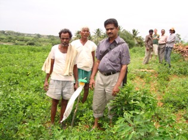
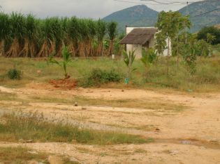
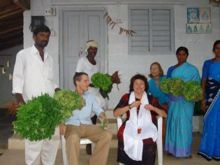

Bio-Bauernhof
Früher wurde natürlich auch in Indien biologisch angebaut. Aber heutzutage durch den Fortschritt der Technik und den Einfluss aus dem Westen und auch durch den Wechsel in der Ausrichtung der Menschen, die nur dem schnell-Geld-machen hinterher rennen, hat sich die Bio-Farmkultur auch in Indien total geändert. Glücklicherweise gibt es aber noch einige Nischen, in denen die Bio-Landwirtschaft überlebt hat, was ein gutes Zeichen ist. Wir unternehmen jede Anstrengung die Farmer der umliegenden Dörfer durch unser ORGANIC FARMING-Programm zu fördern und zu ermutigen ökologische und biologische Landwirtschaftsmethoden anzuwenden. Auf unseren beiden DEMO-BIO-FARMEN wird Zuckerrohr und Gemüse biologisch angebaut, auch um die Armen mit gesunder wertvoller Nahrung zu versorgen.

|
 |
|  |  |
Schnelle Verbindungen
Nachrichten
Helfen Sie Uns
- Der Verein ist beim Finanzamt als gemeinnützig anerkannt und stellt Spendenbescheinigungen aus. Sie können auch einzelne Projekte fördern.